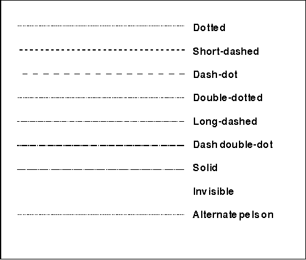

Line type, also called line style, defines the way a line or arc is drawn: as a solid line, a series of dashes, a series of dots, or a combination of dashes and dots.
The line type for all subsequent line primitives is selected using GpiSetLineType. If you want to change the line type to LINETYPE_DOT, for example, any line or arc primitive subsequently drawn is drawn as a dotted line. The following table illustrates the nine standard line types provided by PM.
You cannot define other line types for PM applications.
Standard Line Types
┌────────────────────────┬────────────────────────┬────────────┐ │Type │Identifer │Long Value │ ├────────────────────────┼────────────────────────┼────────────┤ │Dotted line │LINETYPE_DOT │1L │ ├────────────────────────┼────────────────────────┼────────────┤ │Short-dashed line │LINETYPE_SHORTDASH │2L │ ├────────────────────────┼────────────────────────┼────────────┤ │Dash-dot line │LINETYPE_DASHDOT │3L │ ├────────────────────────┼────────────────────────┼────────────┤ │Double-dotted line │LINETYPE_DOUBLEDOT │4L │ ├────────────────────────┼────────────────────────┼────────────┤ │Long-dashed line │LINETYPE_LONGDASH │5L │ ├────────────────────────┼────────────────────────┼────────────┤ │Dash-double-dot line │LINETYPE_DASHDOUBLEDOT │6L │ ├────────────────────────┼────────────────────────┼────────────┤ │Solid line │LINETYPE_SOLID │7L │ ├────────────────────────┼────────────────────────┼────────────┤ │Invisible line │LINETYPE_INVISIBLE │8L │ ├────────────────────────┼────────────────────────┼────────────┤ │Alternate pels on │LINETYPE_ALTERNATE │9L │ └────────────────────────┴────────────────────────┴────────────┘
The default line type (LINETYPE_DEFAULT) is identical to the LINETYPE_SOLID type, and has a long value of 0L. The error line type (LINETYPE_ERROR) has a long value of -1L. The following figure illustrates the nine line types. Your application can determine the current line type using GpiQueryLineType. 
The Nine Line Types